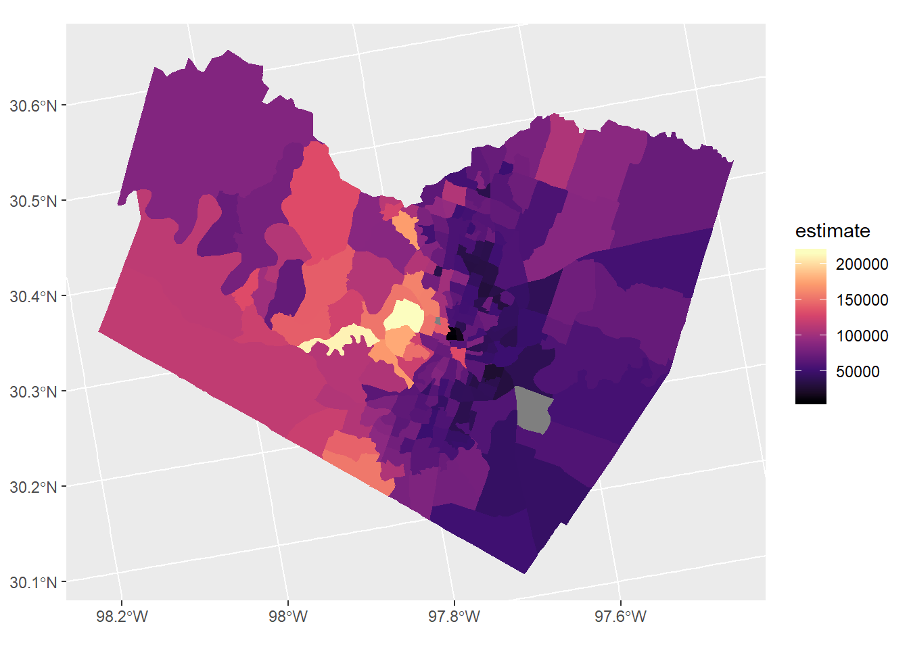

Chapter 2 Vector data with sf
- Some key aspects of sf

Figure 2.1: Sticky geometry with sf
Load tidycensus - you’ll need to set your Census API key. A key can be obtained from here.
## Linking to GEOS 3.6.1, GDAL 2.2.3, PROJ 4.9.3## -- Attaching packages ------------------------ tidyverse 1.3.0 --## v ggplot2 3.2.1 v purrr 0.3.3
## v tibble 2.1.3 v dplyr 0.8.4
## v tidyr 1.0.0 v stringr 1.4.0
## v readr 1.3.1 v forcats 0.4.0## -- Conflicts --------------------------- tidyverse_conflicts() --
## x dplyr::filter() masks stats::filter()
## x dplyr::lag() masks stats::lag()library(tidycensus)
library(ggplot2)
options(tigris_use_cache = TRUE)
austin_tracts <- get_acs(state = 'TX', county = 'Travis', geography = "tract",
variables = "B19013_001", geometry = TRUE)## Getting data from the 2013-2017 5-year ACSaustin_tracts %>%
ggplot(aes(fill = estimate)) +
geom_sf(color = NA) +
coord_sf(crs = 26911) +
scale_fill_viridis_c(option = "magma") 
2.0.1 Challenge: Chained spatial operation
Earlier we showed example of printing and storing a statement using parens
## [1] "C:/Users/mweber/R/library/sf/gpkg/nc.gpkg"How would we read this file into an sf data frame using chained operation?
2.0.2 Answer
## Simple feature collection with 100 features and 14 fields
## geometry type: MULTIPOLYGON
## dimension: XY
## bbox: xmin: -84.32385 ymin: 33.88199 xmax: -75.45698 ymax: 36.58965
## epsg (SRID): 4267
## proj4string: +proj=longlat +datum=NAD27 +no_defs
## # A tibble: 100 x 15
## AREA PERIMETER CNTY_ CNTY_ID NAME FIPS FIPSNO CRESS_ID BIR74 SID74
## <dbl> <dbl> <dbl> <dbl> <chr> <chr> <dbl> <int> <dbl> <dbl>
## 1 0.114 1.44 1825 1825 Ashe 37009 37009 5 1091 1
## 2 0.061 1.23 1827 1827 Alle~ 37005 37005 3 487 0
## 3 0.143 1.63 1828 1828 Surry 37171 37171 86 3188 5
## 4 0.07 2.97 1831 1831 Curr~ 37053 37053 27 508 1
## 5 0.153 2.21 1832 1832 Nort~ 37131 37131 66 1421 9
## 6 0.097 1.67 1833 1833 Hert~ 37091 37091 46 1452 7
## 7 0.062 1.55 1834 1834 Camd~ 37029 37029 15 286 0
## 8 0.091 1.28 1835 1835 Gates 37073 37073 37 420 0
## 9 0.118 1.42 1836 1836 Warr~ 37185 37185 93 968 4
## 10 0.124 1.43 1837 1837 Stok~ 37169 37169 85 1612 1
## # ... with 90 more rows, and 5 more variables: NWBIR74 <dbl>, BIR79 <dbl>,
## # SID79 <dbl>, NWBIR79 <dbl>, geom <MULTIPOLYGON [°]>